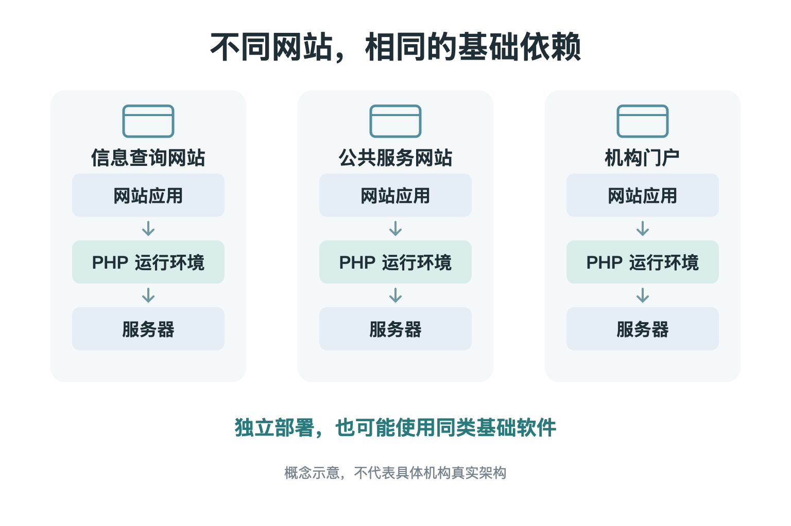
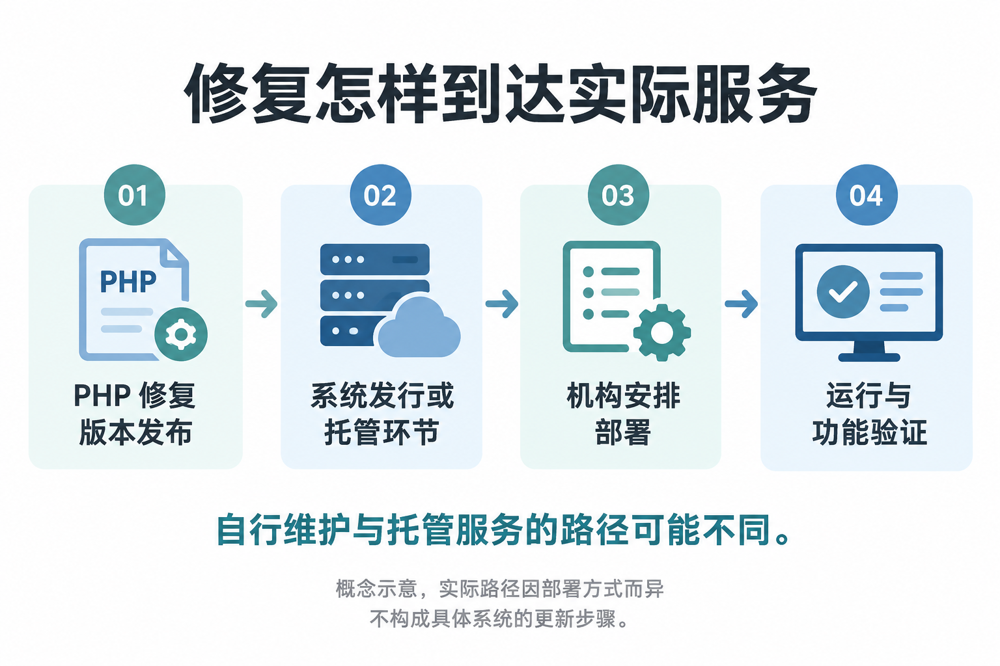

一个编程语言出了漏洞，政府网站先暂停了服务。
这听起来跨了好几层，却是 10 月 21 日发生的事。荷兰政府当天发布公告，确认包括 Overheid.nl、MijnOverheid.nl 和 DigiD 网站在内的部分站点，因 PHP 的两项严重漏洞而预防性下线。
公告同时说明，在当时尚未发现漏洞被积极利用的迹象。许多不使用 PHP 的政府网站，也不受这次问题影响。
这两点很重要：下线是避险措施，不能直接等同于网站已经被攻破；DigiD 网站下线，也不能被扩大解释为整个身份认证体系瘫痪。
即便如此，这个场景仍然值得追问。几个承担不同功能、由不同机构运营的网站，为什么需要为同一个软件问题作出反应？
答案藏在我们平时看不到的地方。
页面各不相同，底下可能是同一种软件
打开网站时，我们看到的是机构名称、页面设计和业务功能。
服务器处理的事情则具体得多：接收请求、判断访问权限、读取资料，再把结果送回浏览器。PHP 是完成这些服务端工作的常见编程语言之一，服务器需要相应的运行环境来执行它。
一个单位可以自己开发网站，也可以采购内容管理系统，交给外部公司部署和维护。无论界面如何定制，其中一部分工作仍可能依靠 PHP 运行。
所以，不同网站有各自的域名、团队和用途，并不意味着底层软件也各不相同。它们可能共享某种运行环境，就像不同品牌的设备可能使用同一类零部件。
这种复用本来有很大的价值。每家机构都从头开发基础软件，成本高，也未必更安全。使用成熟组件，才能把资源放在真正不同的业务上。
代价是，一旦共同依赖的部分出现问题，维护压力也会同时传到许多使用者那里。

各自独立部署，也可能使用同类基础软件；不代表具体机构真实架构。
这次需要修的，是运行环境
过去看到“某网站有漏洞”，人们容易想到登录验证、插件或者网站自己写的程序。
这次披露的两项问题位于 PHP 内部，涉及内存管理与错误处理。PHP 基金会确认，在满足相应条件时，攻击者可能在没有登录的情况下，让服务器执行恶意代码。部分已验证路径甚至可以发生在网站自己的应用代码开始运行之前。
不用记住具体技术名词，也能理解它为什么严重：网站所依赖的执行环境出了问题，检查页面或修改一段业务代码，未必触及真正需要修补的位置。
这也不意味着所有使用 PHP 的站点都具有相同风险。版本、部署方式、暴露情况和已经采取的保护措施，都可能影响判断。
欧洲多家安全机构在联合通告中，还提醒组织检查那些在后台包含 PHP 的产品。机构不一定直接开发过 PHP 程序，却仍可能通过采购的软件或服务与它产生依赖。
于是，收到通告后，第一个问题往往很朴素：我们到底有没有用到它？用在哪里？谁负责？
为什么先暂停，而不是等发现攻击再说？
对公共服务来说，暂停网站并不轻松。
它会影响信息查询和业务办理，也需要向使用者解释。但继续开放同样是一项决定：如果系统确实暴露在严重漏洞之下，等待更多证据也可能让风险继续存在。
荷兰政府当时介绍的建议，是让网站运营者自行评估风险，必要时先将站点预防性下线，等待更新。欧洲安全机构的联合通告也提出，无法立即修复时，可以考虑将暴露的应用与公共网络隔离。
这里并没有一个适用于所有网站的“立刻拔网线”按钮。运营团队需要结合实际系统，决定怎样降低暴露，同时尽量保留必要服务。
从使用者的一侧看，维护公告只是一段文字。对机构而言，它背后可能是一连串判断：服务还应开放多少，哪些功能可以单独隔离，更新能在什么时候完成。
这解释了为什么网站暂时打不开，并不能单凭这一现象判断发生了入侵。有时，短暂的不方便，恰恰来自运营者在损害发生前采取措施。
AI 找到问题，修复还要走到每一个站点
这次事件另一个引人关注的地方，是 AI 的参与。
OpenAI 的披露说明称，安全公司 Calif 在研究中使用模型发现了一项关键缺陷，Wiz 也独立发现并报告了相关漏洞。修复和版本发布则由 PHP 维护者主导，多方参与研究、验证和协调。
这是不同角色接力完成的工作。把它简单写成“AI 昨天挖出了一个洞”，会漏掉发现之后很长的一段路。
PHP 基金会在复盘中解释，相关问题的修复需要兼顾兼容性、性能和扩展生态；团队还要判断不同修复方案的代价。一个看起来能消除问题的改动，也可能影响其他正常运行的功能。
而修复版本发布之后，变化才开始向各个系统传递。
网站可能由单位自己维护，也可能由托管商负责。更新需要进入实际的运行环境，并确认相关功能仍然可用。对于多年未升级的系统，兼容性和迁移安排还会带来额外工作。
Drupal 安全团队这次专门提醒：站点运营者需要关注并维护托管平台的安全。如果 PHP 由自己管理，就要处理相应更新；如果由主机商管理，就需要跟进对方的通知。
同样是“网站修好了”，实际上可能经过不同的人、不同的软件发行渠道和不同的维护合同。

概念示意，实际路径因部署方式而异，不构成具体系统的更新步骤。
公共服务背后的共同依赖
回到最初的问题：为什么一个 PHP 漏洞，会牵动政府网站？
因为数字公共服务的边界，并不完全等于机构的边界。一个机构负责自己的业务，软件依赖却会把它与其他机构、服务商和开源项目联系起来。
这次事件让这种联系变得可见：某个底层问题需要修补，许多运营者就要同时确认自己的系统、联系维护方、安排更新。有些使用者最先感受到的，则是一张暂时无法打开的页面。
AI 的参与，让发现这些隐患多了一种有力手段。但从发现走到实际保护，还要经过研究者、维护者、服务商和运营团队。
我们不需要因此把每一次维护都理解成危机。只是下一次看到公共服务的维护公告时，或许更容易想到：让一个页面安全地重新打开，靠的是它背后那条平时不被看见的维护链。